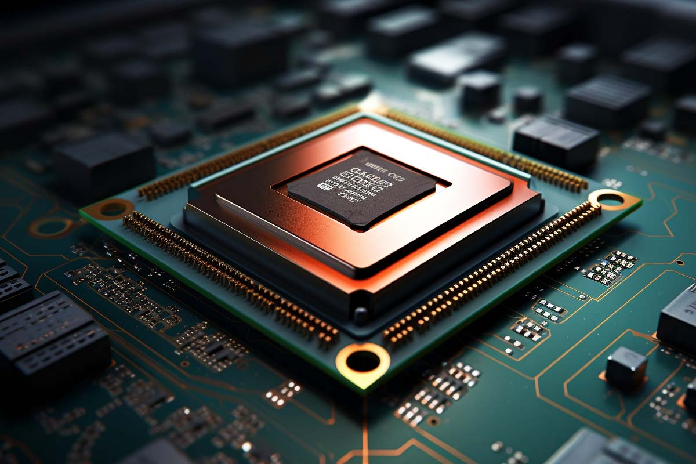

CPU

A central processing unit (CPU) is a hardware component that’s the core computational unit in a server. Servers and other smart devices convert data into digital signals and perform mathematical operations on them. The CPU is the primary component that processes the signals and makes computing possible. It acts as the brain of any computing device. It fetches instructions from memory, performs the required tasks, and sends output back to memory. It handles all computing tasks required for running the operating system and applications.
The earliest computers used vacuum tubes for processing. Machines like the ENIAC and UNIVAC were large and bulky, and they consumed a lot of power and generated significant heat. The invention of transistors in the late 1940s revolutionized CPU technology. Transistors replaced vacuum tubes, making computers smaller, more reliable, and more energy-efficient. In the mid-1960s, integrated circuits (ICs) were developed, which combined multiple transistors and other components on a single computer chip. CPUs became even smaller and faster, leading to the emergence of microprocessors.
A CPU is a complex electronic circuit that comprises several key components that process data and run instructions. The main components of a CPU are given next.
Control unit
The control unit manages instruction processing and coordinates data flow within the CPU and between other computer components. It has an instruction decoder component that interprets the instructions fetched from memory and converts them into micro-operations that the CPU can run. The control unit directs other CPU components to perform required operations.
Registers
Registers are small, high-speed memory storage locations within the CPU. They hold data that the CPU is currently working on and facilitate quick access to data. CPUs have several types of registers, like these:
General-purpose registers that hold operational data
Instruction registers that hold the current instruction being processed
A program counter that holds the memory address of the next instruction to be fetched
Registers provide faster access times than other memory levels like RAM or cache memory.
ALU
The arithmetic logic unit (ALU) performs basic arithmetic operations (addition, subtraction, multiplication, and division) and logical operations (AND, OR, and NOT) on data. It receives data from registers within the CPU, processes it based on the instructions from the control unit, and produces the result.
Memory management unit
Depending on the CPU architecture, there might be a separate bus interface unit or memory management unit. These components handle memory-related tasks, such as managing the CPU and RAM interaction. It also handles cache memory—a small and fast memory unit located within the CPU—and virtual memory that the CPU requires for data processing.
Clock
The CPU relies on a clock signal to synchronize its internal operations. The clock generates a steady pulse at a specific frequency, and these clock cycles coordinate the CPU's operations. The clock speed is measured in hertz (Hz) and determines how many instructions the CPU can execute per second. Modern CPUs have variable clock speeds, which adjust based on workload to balance performance and power consumption.